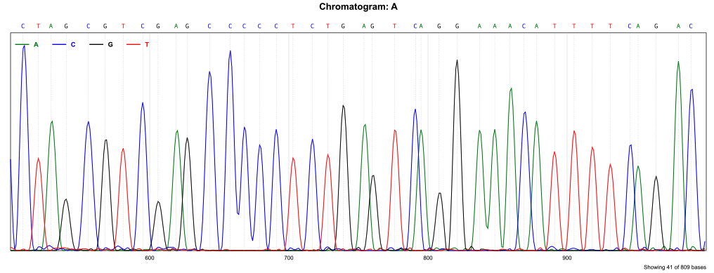

ABIF Parser for Nim


A Nim library to parse ABIF (Applied Biosystems Information Format) files from DNA sequencing machines, commonly used in Sanger capillary sequencing.
Features
- Parse
.ab1and.fsatrace files - Extract sequence data, quality values, and sample names
- Supports all standard ABIF data types
- Export to FASTA and FASTQ formats
- Correctly handles big-endian binary data
Tools
Advanced FASTQ converter with quality trimming capabilities.
This tool allows you to:
- Convert ABIF trace files to FASTQ format
- Trim low-quality bases from sequence ends
- Configure sliding window size and quality threshold
- Output to STDOUT or to a file
Usage Examples:
# Basic conversion
abi2fq trace.ab1 output.fq
abi2fq trace.ab1 output.fq
# With quality trimming (window size 15, quality threshold 25)
abi2fq --window=15 --quality=25 trace.ab1 output.fq
abi2fq --window=15 --quality=25 trace.ab1 output.fq
# Skip quality trimming
abi2fq --no-trim trace.ab1 output.fq
abi2fq --no-trim trace.ab1 output.fq
abichromatogram
Render chromatogram in SVG format
abichromatogram file.ab1 -o image.svg -s 500 -e 1000 --width 1600
Installation
nimble install abif
To install the tool:
conda install -c bioconda nim-abif